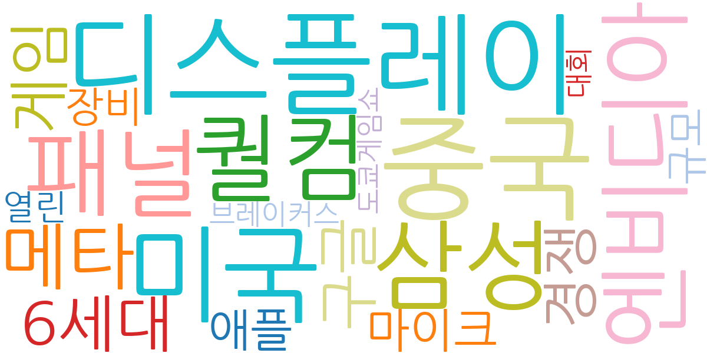
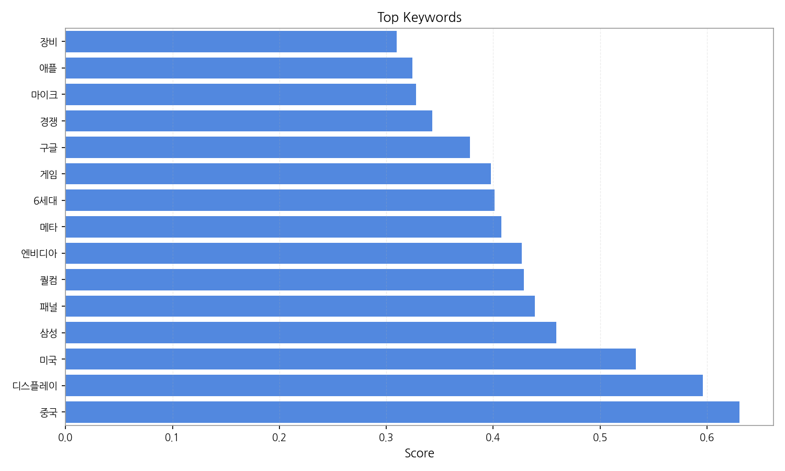
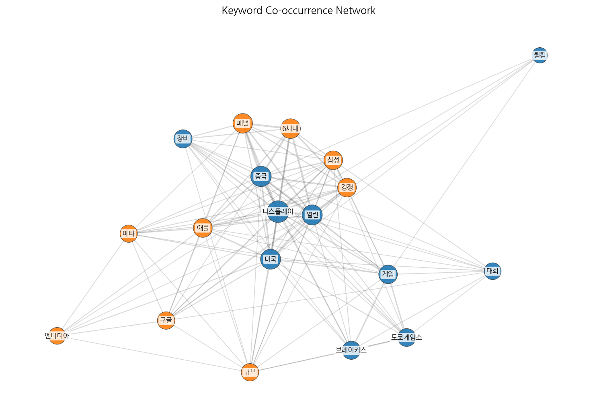
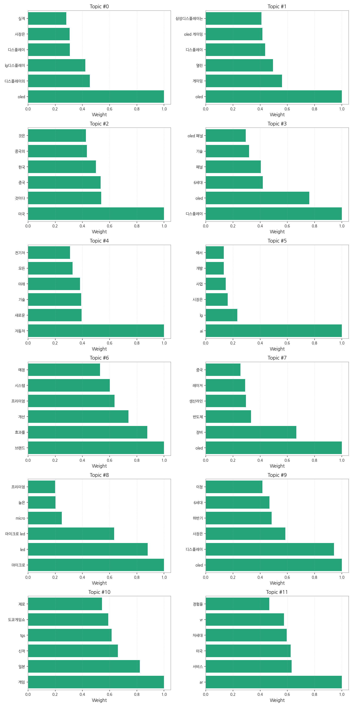
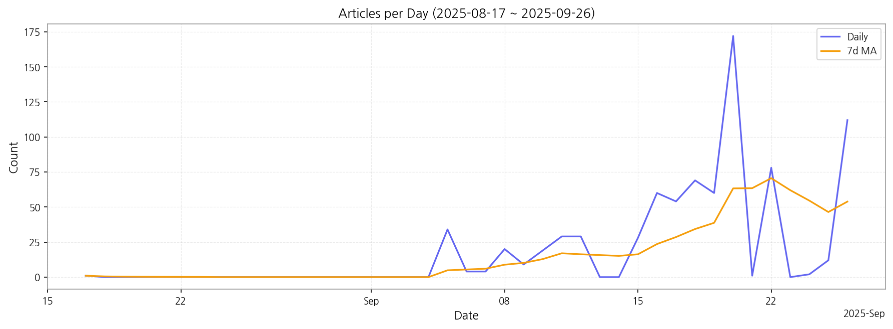

1. 핵심 맥락:
2. 최근 변화/스파이크:
3. 실무 인사이트:

| Rank | Keyword | Score |
|---|---|---|
| 1 | 중국 | 0.630 |
| 2 | 디스플레이 | 0.596 |
| 3 | 미국 | 0.533 |
| 4 | 삼성 | 0.459 |
| 5 | 패널 | 0.439 |
| 6 | 퀄컴 | 0.429 |
| 7 | 엔비디아 | 0.427 |
| 8 | 메타 | 0.408 |
| 9 | 6세대 | 0.401 |
| 10 | 게임 | 0.398 |
| 11 | 구글 | 0.378 |
| 12 | 경쟁 | 0.343 |
| 13 | 마이크 | 0.328 |
| 14 | 애플 | 0.324 |
| 15 | 장비 | 0.310 |




1. 핵심 맥락:
2. 최근 변화/스파이크:
3. 실무 인사이트:
| Idea | Target | Value Prop | Score |
|---|---|---|---|
| 개인 맞춤형 XR 글래스용 초고해상도 마이크로 OLED 솔루션 | 북미 빅테크 기업 (AR/VR/XR 기기 제조사) | 최고 수준의 몰입감과 편안함 제공: 개인 맞춤형 시력 보정 및 IPD 조절 기능, 초고해상도 마이크로 OLED 기술, 저전력 설계, 경량화 디자인, 경쟁사 대비 뛰어난 색재현율 및 명암비 제공. | 4.50 |
| AI 기반 디스플레이 공정 자동화 및 수율 개선 솔루션 | 국내외 디스플레이 제조사 | 생산 효율성 극대화 및 비용 절감: AI 기반 실시간 공정 데이터 분석 및 예측, 자동화된 공정 제어 및 최적화, 불량 예측 및 조기 경보, 수율 향상 및 생산 비용 절감, 경쟁사 대비 뛰어난 분석 정확도 및 예측 성능 제공. | 4.30 |
| 차량용 AR HUD (증강 현실 헤드업 디스플레이) 솔루션 | 글로벌 완성차 OEM (특히 프리미엄 브랜드) | 운전 안전성 극대화 및 차별화된 사용자 경험 제공: 실시간 도로 정보, ADAS 경고, 내비게이션 정보를 통합하여 운전자 시야에 증강 현실로 표시, 직관적인 정보 전달 및 인지 부하 감소, 경쟁사 대비 넓은 시야각 및 고해상도 제공. | 4.20 |
| IT 기기용 폴더블 OLED 패널 솔루션 | 글로벌 IT 기기 제조사 (노트북, 태블릿, 스마트폰) | 최고 수준의 내구성과 사용자 경험 제공: 힌지리스 폴더블 기술, UTG (Ultra Thin Glass) 소재 적용, 주름 최소화 기술, 슬림 디자인, 경쟁사 대비 뛰어난 터치 응답 속도 및 시야각 제공. | 4.00 |
| QD-MicroLED 기반 초대형 프리미엄 TV 솔루션 | 프리미엄 TV 시장 소비자 (고소득층) | 최고 수준의 화질과 내구성 제공: QD 기술 기반의 뛰어난 색재현율 및 명암비, MicroLED의 높은 휘도 및 긴 수명, 번인 현상 없음, 경쟁사 대비 넓은 시야각 및 빠른 응답 속도 제공. | 3.80 |